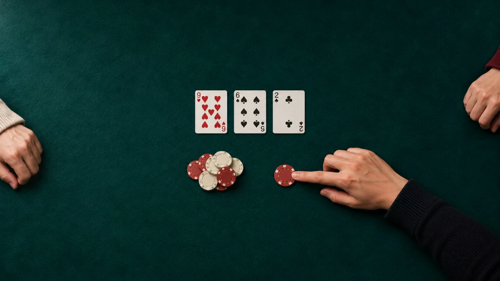

開催日程
本日・近日の大会スケジュール
開催日・参加費・受付締切は店舗の大会カレンダーで確認できます。
トーナメントの遊び方と参加方法
いわし赤坂ではノーリミット・テキサスホールデムの大会が開催されています。各プレイヤーが同じ回に参加し、時間とともにブラインドが上がる中で順位を競います。
出たい大会を選ぶ
大会カードからPokerFansを開き、当日の開始時刻、参加費、受付締切を確認します。
大会ページで申し込む
「参加予約」がある回は、案内に沿って申し込みます。再参加できる条件や締切も大会ごとに確認してください。
時間に余裕を持って来店
黛ビル3階で受付。参加費とは別にチャージ・ドリンク料金が案内される場合があります。